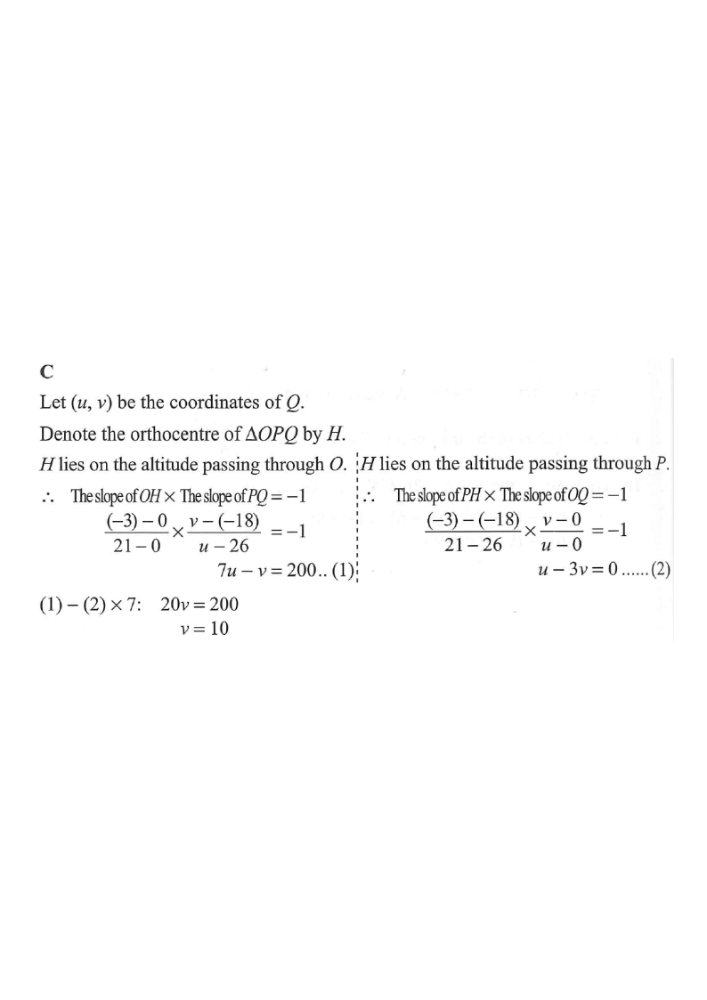

Let $(u,v)$ be the coordinates of $Q$, and let $H$ be the orthocentre of $\triangle OPQ$.
Given: $O=(0,0)$, $P=(26,-18)$ and $H=(21,-3)$.
Key fact: the altitude from a vertex is perpendicular to the opposite side.
The altitude through $O$ passes through $H$. Since it is perpendicular to $PQ$:
$$\text{slope}(OH)\times\text{slope}(PQ)=-1$$
$$\frac{-3-0}{21-0}\times\frac{v-(-18)}{u-26}=-1$$
$$\frac{-1}{7}\times\frac{v+18}{u-26}=-1 \;\Rightarrow\; \frac{v+18}{u-26}=7$$
$$7u-v=200 \quad \cdots (1)$$
The altitude through $P$ also passes through $H$. Since it is perpendicular to $OQ$:
$$\text{slope}(PH)\times\text{slope}(OQ)=-1$$
$$\frac{-3-(-18)}{21-26}\times\frac{v-0}{u-0}=-1$$
$$\frac{15}{-5}\times\frac{v}{u}=-1 \;\Rightarrow\; -3\cdot\frac{v}{u}=-1$$
$$u-3v=0 \quad \cdots (2)$$
From $(2)$: $\;u=3v$. Substitute into $(1)$:
$$7(3v)-v=200 \;\Rightarrow\; 20v=200$$
$$v=10 \;\Rightarrow\; u=30$$
So $Q=(30,\,10)$ and the $y$-coordinate of $Q$ is $10$.